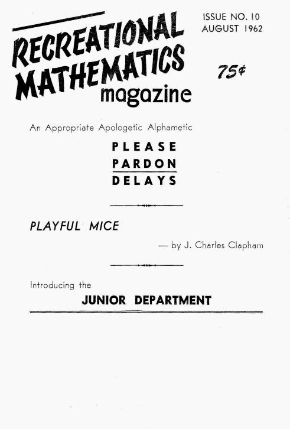
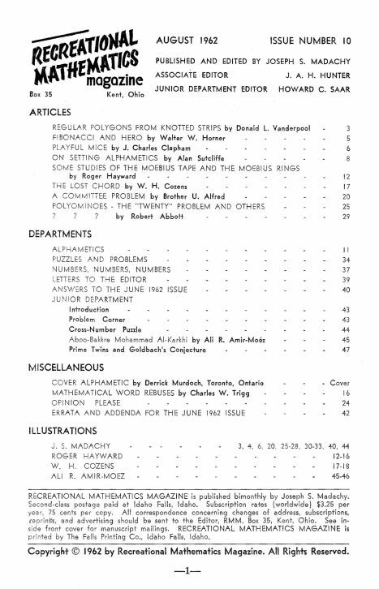
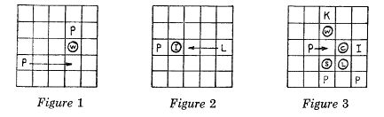
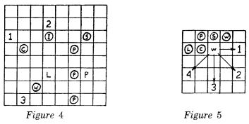
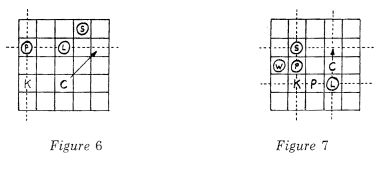
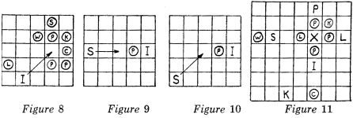

 |
|
 |
| ||
? ? ? |
by Robert Abbott | |
|
We are developing a game that so far has shown great promise of rivalling chess in interest. The game has yielded complex and intriguing strategies; and we feel these strategies are only part of the surface, that further play will reveal deeper and more intricate strategies. However, since it has been difficult to recruit players of the right ability and interest to follow the game through any extensive play, the game in its present form has not received an adequate amount of testing. Thus there is the possibility that further play will yield not deeper strategy but instead will reveal a perfect strategy which would always obtain a win or draw for the player that follows it. This of course would make the game trivial, unless it were possible to change certain of the moves or captures. For this reason we thought some of the readers of RMM would like to tryout the game. It is the sort of game you would probably find interesting and, if any of you find yourselves playing it extensively, perhaps you might want to write us your experiences with it or write any suggestions you would have for changes in rules. You probably have noticed that one thing this game lacks is a name; so we are especially interested in suggestions for this. * Our game uses the regular chess board and pieces, but it shouldn’t be thought of as strictly a fairy chess, as it is quite far from chess. Nor is it like any of the “simplified” chess games you may have seen on the market. These games may have rules that are simpler than chess, but their play often seems arbitrary and confused. Although the rules for our game are complex, after it is played once or twice it is possible to see quite clearly what is going on and thus to develop strategies that involve several moves ahead of time. There is, unfortunately, some opportunity for sneak attacks and blunders, but you should find these reduced as experience is gained - just as in chess. The pieces are set up exactly the same way as for chess except each player should place a piece of tape on the rook on his left or in some way mark it to distinguish it from the other rook. This marked rook is called the “immobilizer” in the game. The knights are called “long leapers,” the bishops are called “chameleons,” the queen is called the
“withdrawer,” the king is still called “king” and the rook on the right, the one that is not marked, is called the “coordinator.” The pawns are still called “pawns” for want of a new name. *Editor’s Footnote: Two FREE years of RMM (new subscription or extension of present subscription) to the one who suggests the name eventually chosen by Mr. Abbott. In case of duplicate entries, the first entry received will be considered. Our game is to a large degree eclectic, and its basic idea came about through readings in the history of games. It can be noted that there are very many different forms of captures used in the various games throughout history. However, each particular game uses only one form of capture. Chess, for instance, has different moves for its pieces, but each piece captures in the same fashion, by moving onto the same space as the piece it is capturing. Checkers has one form of capture, the short leap, even though the men and the kings have different powers of movement. The basic concept behind our game was to construct a game that used several different forms of capture. Thus each of the seven different pieces uses a different form of capture. There are, however, only three different powers of movement in the game. With this in mind I can proceed to an explanation of the movements and means of capture of each piece. KING: The king moves and captures in exactly the same fashion as the chess king. The object of the game is to capture this king. The same rules for declaring check apply as in chess. PAWNS: The pawns can move any number of unoccupied squares orthogonally (horizontally or vertically, but not diagonally). Thus their power of movement is the same as the rook in chess. The pawns use a form of the “interception” capture. This is the oldest form of capture found in war games, predating the replacement capture of chess games and the leap of alquerque and checkers. Interception was the form of capture used in ancient games such as the Saxon Hnefatafl and the Roman game Latrunculi. If a pawn moves onto a square that is orthogonally next to an enemy piece, and if there is a friendly piece (any friendly piece, not necessarily another pawn) on the other side of that enemy piece, then the enemy piece is captured and removed from the board. As an example, if the pawn in Figure 1 moves up to the head of the arrow, it captures the enemy withdrawer. (In these figures the friendly pieces are represented by letters and the enemy pieces by letters enclosed in circles. The pieces are represented by the first letter of their name, except for the chameleon which is arbitrarily designated by “S” to distinguish it from the coordinator, “C”.) To use this form of capture, however, the piece that does the moving must be the pawn. If the long-leaper in Figure 2 moves to the head of the arrow, it would not capture the immobilizer, even though the immobilizer is now between the pawn and the long-leaper. The long-leaper uses a different form of capture, and in this game, it is the piece that does the moving that determines what form of capture may be used. A pawn may capture more than one piece in a move. If the pawn in Figure 3 moves to the head of the arrow, it captures three enemy pieces, the withdrawer, the coordinator and the chameleon. It does not capture the enemy long-leaper, since it has not moved to the square orthogonally next to it. A piece may move to the square between two enemy pawns without fear of being captured by them on the enemy’s next turn. | ||
 LONG-LEAPER: This piece is named after its capture, a variation of the long leap which is found in Polish and Spanish checkers. The long-leaper may move any number of unoccupied squares orthogonally or diagonally (as the queen’s move in chess). In addition, if it can approach an enemy piece by a legal move, and if the next square beyond the enemy is vacant, it can leap over the enemy piece to that vacant square. The piece lept over is then captured. The long-leaper in Figure 4 could capture the enemy coordinator by leaping over it to space 1; it could capture the immobilizer by leaping over it to space 2; or it could capture the withdrawer by leaping over it to space 3. This last move might be called a short leap, but this is also a capture the piece can perform. The long-leaper in the figure cannot capture any of the enemy pawns, since there are no vacant spaces on the other sides of them. A long-leaper can capture only one enemy piece in a turn and it cannot leap over friendly pieces. | ||
 WITHDRAWER: The withdrawer can move any number of unoccupied squares in an orthogonal or diagonal direction. It can capture a piece next to it by moving any number of unoccupied squares directly away from that piece. Thus the withdrawer in Figure 5 could capture the coordinator by moving any number of squares along the arrow marked 1, or it could capture the pawn by moving along the arrow marked 2, or it could capture the chameleon if it moved along the arrow marked 3, or it could capture the enemy withdrawer by moving along arrow 4. This withdrawal capture was found in the description of a Madagascan game called Fanorona. I have not seen it in any other game. COORDINATOR: The coordinator uses an original capture not found in other known games. The coordinator can move any number of unoccupied squares in an orthogonal or diagonal direction. When it finishes its move, it captures any enemy piece that is on an intersection of the orthogonal lines that pass through the coordinator and through the friendly king. In Figure 6, if the coordinator moves to the head of the arrow, it captures the enemy pawn; for this pawn is on the intersection of the vertical dotted line, which passes through the king, and the horizontal dotted line, which passes through the point where the coordinator finished its move. A coordinator can also capture two pieces in a single move. In Figure 7, if the coordinator moves up one space, it captures the enemy chameleon and long-leaper. The orthogonal lines that run through the king and through the coordinator at the end of its move are drawn in the diagram. Moving the king, instead of the coordinator, does not effect a capture by the coordinator even if enemy pieces would then be on the intersection of coordinate lines. The coordinator must be the piece that moves if you wish to effect the coordinate capture. It might appear difficult to anticipate an attack from the coordinator. However, if a player watches what pieces he has on a line with the enemy king, he will be able to see which are vulnerable to the coordinator. | ||
 IMMOBILIZER: The dread immobilizer is another original sort of piece. The immobilizer does not capture its victims, for it does not remove them from the board, but instead paralyzes any piece it is next to in an orthogonal or diagonal direction. Any enemy piece the immobilizer moves next to, or any enemy piece that moves next to the immobilizer, loses its powers of movement. The powers of movement, however, are restored if the immobilizer moves away or is captured. The immobilizer can move any number of unoccupied squares in an orthogonal or diagonal direction. In Figure 8 the immobilizer moves to the head of the arrow and paralyzes the enemy king, withdrawer, coordinator and three pawns. However, by this same move it frees the enemy long-leaper which had previously been immobilized. It is not necessary to announce check before immobilizing a king. | ||
 A piece may move past an enemy immobilizer without being paralyzed, but if it finishes its move on a square next to the immobilizer it loses its power of movement. If the two immobilizers come together, they immobilize each other as well as any enemy pieces in contact. Neither immobilizer thus can move unless the other is captured. CHAMELEON: The purpose of the chameleon can be simply stated. It does to pieces what they do to other pieces. It captures an enemy piece in the manner that the enemy piece captures. When it is not capturing, it may move any number of squares in an orthogonal or diagonal line. However, when it captures it can move only in a way that the piece it is capturing could move. Thus the chameleon in Figure 9 could move to the head of the arrow and capture the pawn by interception, the pawns’ method of capture. However, the chameleon in Figure 10 could move to the head of the arrow, but it could not capture the pawn since it has moved diagonally, a move that a pawn can’t make. A chameleon can do many things in a single move. In Figure 11 the chameleon leaps over the long-leaper to the spot marked “x.” It thus captures the long-leaper; it captures the withdrawer (by withdrawal); it captures the coordinator by placing it on the intersection of the orthogonal lines through the chameleon and the friendly king; it captures the three pawns by interception; and it gives check to the king. A chameleon can give check to a king by moving onto the space next to the king, for on the next move it could act as a king and capture the king. A chameleon can immobilize an immobilizer by moving next to it, or an immobilizer becomes paralyzed if it moves next to a chameleon. In either case both pieces become paralyzed and neither can move unless the other is captured. The immobilizer in this case continues to paralyze any other enemy piece next to it, although the chameleon of course lacks this ability. A chameleon cannot capture another chameleon. There is one special move in this game, that of suicide. A player may use a turn to remove from the board one of his own pieces (except his king) that is immobilized. This is sometimes a valuable move since it may clear the way for an attack on the immobilizer. However, a player cannot return a piece to the board which he has removed in the suicide move. This completes the description of the game. If any points are not clear, the best procedure would be to follow whatever interpretation of the rule you think works best in the situation. We would appreciate any report of situations where the above rules do not make it clear as to what should be done. You may recall that the April 1962 issue of RMM, page 42, reprinted the card game Babel from a book I privately published called Four New Card Games (which incidentally is no longer available). The four games, plus about three additional card games, will be included in a book Abbott’s Card Games to be published next Spring by Stein and Day Publishers. Also included will be the game described here, even though it is not a card game. We would therefore welcome any suggestions for naming the game, improvement of the game and points of strategy. We are especially interested in discovering the minimum number of pieces needed for checkmate. Please address all correspondence - especially game-naming efforts to obtain the free two years of RMM - to the writer:
| ||